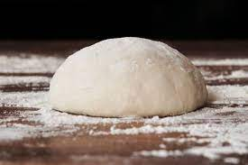
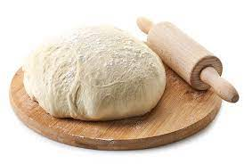

Welcome to my pizza dough page
I will give you a short and simple recipe to make the best dough!


First the indigrients
- Water 600 ml
- Flour type 405 1kg
- Starter 0.5g
- Salt 40g
- lots of time and muscle power
The Holy Grail of manuals
- Start mixing water, 600g flour and salt
- Add starter
- Let it rest for 20m
- Add 200g of flour
- Mix and let it rest 20m
- prepare a clean tablet and pour the reminaing flour on it
- pour the dough on top and knete it again for atleast 10m
- make small balls à 150g and seal each in a container and put them in the fridge for atleast 1 day
- take em out and for the pizza into a flat round container for all the cheese and tomato u want